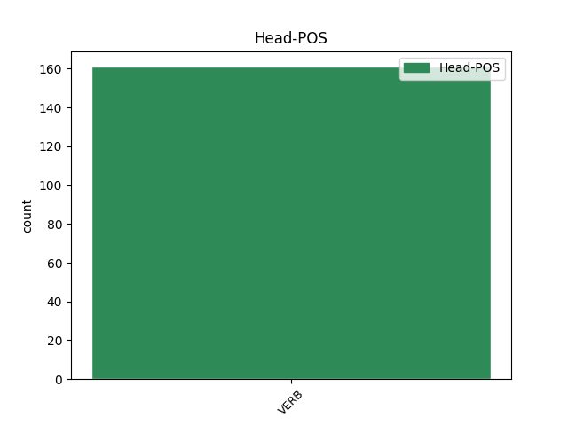
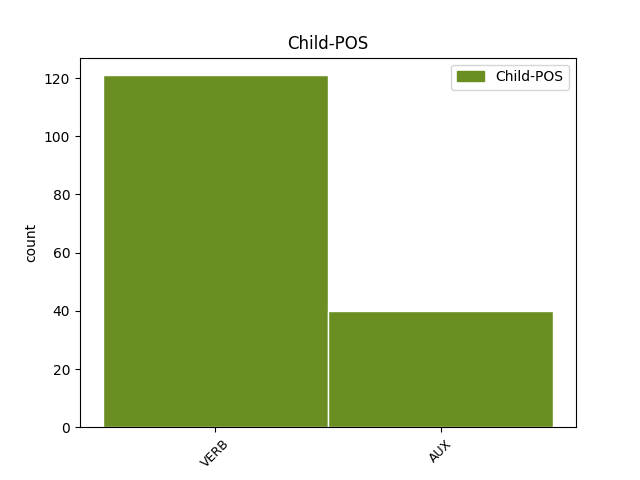

Distribution of features within this leaf


Agreement Rules sorted by frequency.
- When the dependent token is the conjunct(conj) of the head token, and the head token is VERB
1 No _ _ _ _ 0 _ _ _
2 written _ _ _ _ 0 _ _ _
3 contemporary _ _ _ _ 0 _ _ _
4 description _ _ _ _ 0 _ _ _
5 of _ _ _ _ 0 _ _ _
6 Shakespeare _ _ _ _ 0 _ _ _
7 's _ _ _ _ 0 _ _ _
8 physical _ _ _ _ 0 _ _ _
9 appearance _ _ _ _ 0 _ _ _
10 survives survive VERB V Mood=Ind|Number=Sing|Person=3|Tense=Pres|VerbForm=Fin 0 _ _ _
11 , _ _ _ _ 0 _ _ _
12 and _ _ _ _ 0 _ _ _
13 no _ _ _ _ 0 _ _ _
14 evidence _ _ _ _ 0 _ _ _
15 suggests suggest VERB V Mood=Ind|Number=Sing|Person=3|Tense=Pres|VerbForm=Fin 10 conj _ _
16 that _ _ _ _ 0 _ _ _
17 he _ _ _ _ 0 _ _ _
18 ever _ _ _ _ 0 _ _ _
19 commissioned _ _ _ _ 0 _ _ _
20 a _ _ _ _ 0 _ _ _
21 portrait _ _ _ _ 0 _ _ _
22 , _ _ _ _ 0 _ _ _
23 so _ _ _ _ 0 _ _ _
24 the _ _ _ _ 0 _ _ _
25 Droeshout _ _ _ _ 0 _ _ _
26 engraving _ _ _ _ 0 _ _ _
27 , _ _ _ _ 0 _ _ _
28 which _ _ _ _ 0 _ _ _
29 Ben _ _ _ _ 0 _ _ _
30 Jonson _ _ _ _ 0 _ _ _
31 approved _ _ _ _ 0 _ _ _
32 of _ _ _ _ 0 _ _ _
33 as _ _ _ _ 0 _ _ _
34 a _ _ _ _ 0 _ _ _
35 good _ _ _ _ 0 _ _ _
36 likeness _ _ _ _ 0 _ _ _
37 , _ _ _ _ 0 _ _ _
38 and _ _ _ _ 0 _ _ _
39 his _ _ _ _ 0 _ _ _
40 Stratford _ _ _ _ 0 _ _ _
41 monument _ _ _ _ 0 _ _ _
42 provide _ _ _ _ 0 _ _ _
43 the _ _ _ _ 0 _ _ _
44 best _ _ _ _ 0 _ _ _
45 evidence _ _ _ _ 0 _ _ _
46 of _ _ _ _ 0 _ _ _
47 his _ _ _ _ 0 _ _ _
48 appearance _ _ _ _ 0 _ _ _
49 . _ _ _ _ 0 _ _ _
Disagree Examples:
1 I _ _ _ _ 0 _ _ _
2 declare declare VERB V Mood=Ind|Number=Sing|Person=1|Tense=Pres|VerbForm=Fin 0 _ _ _
3 resumed _ _ _ _ 0 _ _ _
4 the _ _ _ _ 0 _ _ _
5 session _ _ _ _ 0 _ _ _
6 of _ _ _ _ 0 _ _ _
7 the _ _ _ _ 0 _ _ _
8 European _ _ _ _ 0 _ _ _
9 Parliament _ _ _ _ 0 _ _ _
10 adjourned _ _ _ _ 0 _ _ _
11 on _ _ _ _ 0 _ _ _
12 Friday _ _ _ _ 0 _ _ _
13 17 _ _ _ _ 0 _ _ _
14 December _ _ _ _ 0 _ _ _
15 1999 _ _ _ _ 0 _ _ _
16 , _ _ _ _ 0 _ _ _
17 and _ _ _ _ 0 _ _ _
18 I _ _ _ _ 0 _ _ _
19 would will AUX VM Mood=Ind|Person=3|Tense=Past|VerbForm=Fin 2 conj _ _
20 like _ _ _ _ 0 _ _ _
21 once _ _ _ _ 0 _ _ _
22 again _ _ _ _ 0 _ _ _
23 to _ _ _ _ 0 _ _ _
24 wish _ _ _ _ 0 _ _ _
25 you _ _ _ _ 0 _ _ _
26 a _ _ _ _ 0 _ _ _
27 happy _ _ _ _ 0 _ _ _
28 new _ _ _ _ 0 _ _ _
29 year _ _ _ _ 0 _ _ _
30 in _ _ _ _ 0 _ _ _
31 the _ _ _ _ 0 _ _ _
32 hope _ _ _ _ 0 _ _ _
33 that _ _ _ _ 0 _ _ _
34 you _ _ _ _ 0 _ _ _
35 enjoyed _ _ _ _ 0 _ _ _
36 a _ _ _ _ 0 _ _ _
37 pleasant _ _ _ _ 0 _ _ _
38 festive _ _ _ _ 0 _ _ _
39 period _ _ _ _ 0 _ _ _
40 . _ _ _ _ 0 _ _ _
1 I _ _ _ _ 0 _ _ _
2 do _ _ _ _ 0 _ _ _
3 not _ _ _ _ 0 _ _ _
4 know know VERB V Mood=Ind|Number=Plur|Tense=Pres|VerbForm=Fin 0 _ _ _
5 whether _ _ _ _ 0 _ _ _
6 this _ _ _ _ 0 _ _ _
7 information _ _ _ _ 0 _ _ _
8 is _ _ _ _ 0 _ _ _
9 correct _ _ _ _ 0 _ _ _
10 , _ _ _ _ 0 _ _ _
11 but _ _ _ _ 0 _ _ _
12 the _ _ _ _ 0 _ _ _
13 PPE _ _ _ _ 0 _ _ _
14 - _ _ _ _ 0 _ _ _
15 DE _ _ _ _ 0 _ _ _
16 Group _ _ _ _ 0 _ _ _
17 would will AUX VM Mood=Ind|Person=3|Tense=Past|VerbForm=Fin 4 conj _ SpaceAfter=No
18 , _ _ _ _ 0 _ _ _
19 in _ _ _ _ 0 _ _ _
20 any _ _ _ _ 0 _ _ _
21 case _ _ _ _ 0 _ _ _
22 , _ _ _ _ 0 _ _ _
23 be _ _ _ _ 0 _ _ _
24 grateful _ _ _ _ 0 _ _ _
25 if _ _ _ _ 0 _ _ _
26 this _ _ _ _ 0 _ _ _
27 item _ _ _ _ 0 _ _ _
28 were _ _ _ _ 0 _ _ _
29 removed _ _ _ _ 0 _ _ _
30 because _ _ _ _ 0 _ _ _
31 Parliament _ _ _ _ 0 _ _ _
32 has _ _ _ _ 0 _ _ _
33 addressed _ _ _ _ 0 _ _ _
34 this _ _ _ _ 0 _ _ _
35 issue _ _ _ _ 0 _ _ _
36 several _ _ _ _ 0 _ _ _
37 times _ _ _ _ 0 _ _ _
38 already _ _ _ _ 0 _ _ _
39 . _ _ _ _ 0 _ _ _
1 These _ _ _ _ 0 _ _ _
2 are _ _ _ _ 0 _ _ _
3 two _ _ _ _ 0 _ _ _
4 areas _ _ _ _ 0 _ _ _
5 of _ _ _ _ 0 _ _ _
6 action _ _ _ _ 0 _ _ _
7 which _ _ _ _ 0 _ _ _
8 I _ _ _ _ 0 _ _ _
9 invite invite VERB V Mood=Ind|Number=Sing|Person=1|Tense=Pres|VerbForm=Fin 0 _ _ _
10 the _ _ _ _ 0 _ _ _
11 Commissioner _ _ _ _ 0 _ _ _
12 to _ _ _ _ 0 _ _ _
13 set _ _ _ _ 0 _ _ _
14 up _ _ _ _ 0 _ _ _
15 and _ _ _ _ 0 _ _ _
16 in _ _ _ _ 0 _ _ _
17 which _ _ _ _ 0 _ _ _
18 I _ _ _ _ 0 _ _ _
19 would will AUX VM Mood=Ind|Person=3|Tense=Past|VerbForm=Fin 9 conj _ _
20 ask _ _ _ _ 0 _ _ _
21 him _ _ _ _ 0 _ _ _
22 to _ _ _ _ 0 _ _ _
23 involve _ _ _ _ 0 _ _ _
24 us _ _ _ _ 0 _ _ _
25 . _ _ _ _ 0 _ _ _
1 In _ _ _ _ 0 _ _ _
2 line _ _ _ _ 0 _ _ _
3 with _ _ _ _ 0 _ _ _
4 Article _ _ _ _ 0 _ _ _
5 13 _ _ _ _ 0 _ _ _
6 of _ _ _ _ 0 _ _ _
7 Council _ _ _ _ 0 _ _ _
8 Decision _ _ _ _ 0 _ _ _
9 of _ _ _ _ 0 _ _ _
10 17 _ _ _ _ 0 _ _ _
11 December _ _ _ _ 0 _ _ _
12 2001 _ _ _ _ 0 _ _ _
13 establishing establish VERB V Tense=Pres|VerbForm=Part 0 _ _ _
14 an _ _ _ _ 0 _ _ _
15 exchange _ _ _ _ 0 _ _ _
16 , _ _ _ _ 0 _ _ _
17 assistance _ _ _ _ 0 _ _ _
18 and _ _ _ _ 0 _ _ _
19 training _ _ _ _ 0 _ _ _
20 programme _ _ _ _ 0 _ _ _
21 for _ _ _ _ 0 _ _ _
22 the _ _ _ _ 0 _ _ _
23 protection _ _ _ _ 0 _ _ _
24 of _ _ _ _ 0 _ _ _
25 the _ _ _ _ 0 _ _ _
26 euro _ _ _ _ 0 _ _ _
27 against _ _ _ _ 0 _ _ _
28 counterfeiting _ _ _ _ 0 _ _ _
29 ( _ _ _ _ 0 _ _ _
30 the _ _ _ _ 0 _ _ _
31 ‘ _ _ _ _ 0 _ _ _
32 Pericles _ _ _ _ 0 _ _ _
33 ’ _ _ _ _ 0 _ _ _
34 programme _ _ _ _ 0 _ _ _
35 ) _ _ _ _ 0 _ _ _
36 and _ _ _ _ 0 _ _ _
37 based base VERB V Tense=Past|VerbForm=Part 13 conj _ _
38 on _ _ _ _ 0 _ _ _
39 the _ _ _ _ 0 _ _ _
40 Pericles _ _ _ _ 0 _ _ _
41 evaluation _ _ _ _ 0 _ _ _
42 report _ _ _ _ 0 _ _ _
43 of _ _ _ _ 0 _ _ _
44 30 _ _ _ _ 0 _ _ _
45 November _ _ _ _ 0 _ _ _
46 2004 _ _ _ _ 0 _ _ _
47 , _ _ _ _ 0 _ _ _
48 it _ _ _ _ 0 _ _ _
49 is _ _ _ _ 0 _ _ _
50 proposed _ _ _ _ 0 _ _ _
51 that _ _ _ _ 0 _ _ _
52 the _ _ _ _ 0 _ _ _
53 Council _ _ _ _ 0 _ _ _
54 decision _ _ _ _ 0 _ _ _
55 be _ _ _ _ 0 _ _ _
56 extended _ _ _ _ 0 _ _ _
57 and _ _ _ _ 0 _ _ _
58 amended _ _ _ _ 0 _ _ _
59 . _ _ _ _ 0 _ _ _
1 Now _ _ _ _ 0 _ _ _
2 suppose _ _ _ _ 0 _ _ _
3 , _ _ _ _ 0 _ _ _
4 instead _ _ _ _ 0 _ _ _
5 of _ _ _ _ 0 _ _ _
6 Styrofoam _ _ _ _ 0 _ _ _
7 peanuts _ _ _ _ 0 _ _ _
8 , _ _ _ _ 0 _ _ _
9 we _ _ _ _ 0 _ _ _
10 take _ _ _ _ 0 _ _ _
11 these _ _ _ _ 0 _ _ _
12 lovely _ _ _ _ 0 _ _ _
13 little _ _ _ _ 0 _ _ _
14 chocolates _ _ _ _ 0 _ _ _
15 that _ _ _ _ 0 _ _ _
16 we _ _ _ _ 0 _ _ _
17 get get VERB V Mood=Ind|Number=Plur|Tense=Pres|VerbForm=Fin 0 _ _ _
18 and _ _ _ _ 0 _ _ _
19 we _ _ _ _ 0 _ _ _
20 had have VERB V Mood=Ind|Person=3|Tense=Past|VerbForm=Fin 17 conj _ _
21 those _ _ _ _ 0 _ _ _
22 instead _ _ _ _ 0 _ _ _
23 . _ _ _ _ 0 _ _ _